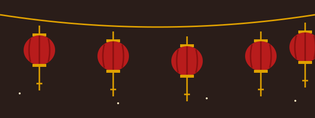

Tourism in China
China is a vast country with some of the world's oldest cities, dramatic landscapes and a food culture that varies from region to region. This guide covers why to go, when to go and the basics of getting around.
Why visit China
- History: the Great Wall, the Forbidden City in Beijing and the Terracotta Army near Xi'an.
- Cities: from the skyscrapers of Shanghai and Hong Kong to historic old quarters.
- Landscapes: the limestone karst hills around Guilin and Yangshuo, among many others.
- Food: regional cuisines such as Sichuan, Cantonese and the many styles of noodles and dumplings.
- Wildlife: the giant panda, which can be seen at research bases near Chengdu.

Best times to go
China is big, so the climate varies. As a general guide:
- Spring (April to May) and autumn (September to October) are popular for much of the country, with milder weather in many places.
- Summer can be hot and humid, especially in the south and east, and often brings the most rain.
- Winter is cold in the north, including Beijing, and mild in the far south.
- Public holidays, such as Chinese New Year and the National Day holiday in early October, are very busy at tourist sites and on trains. Book ahead or avoid them if you can.
Travel basics
- Visas: rules depend on your nationality and change from time to time. Check the official embassy or consulate website of China before you book.
- High-speed rail: China has the world's largest high-speed rail network, linking most major cities. It is a fast and comfortable way to travel between them.
- In cities: large cities have extensive metro systems.
- Payments and apps: mobile payment is widely used, so it is wise to check in advance how visitors can pay and to carry a back-up option.
- Language: Mandarin is the official language. Signs in major cities and on transport are often also in English.
Which city suits you?
Choose what you enjoy most:
Choose an interest above.
Read more about each city on the major cities page.